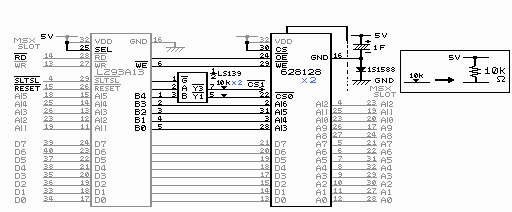
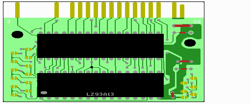
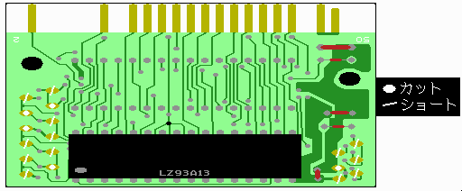
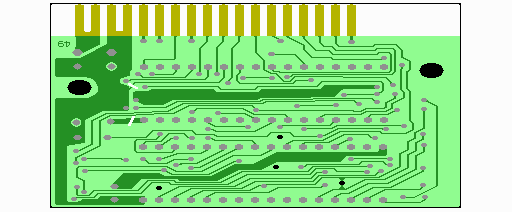
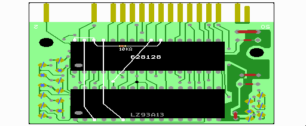
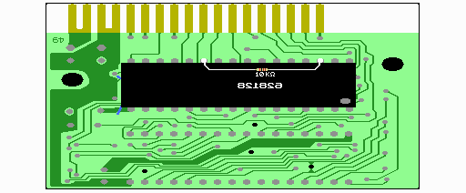
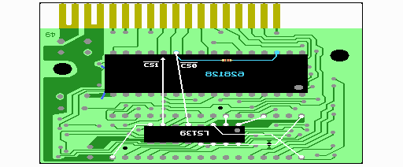
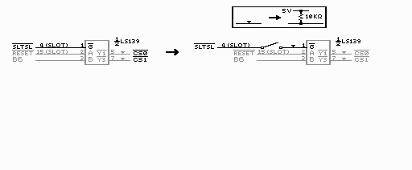
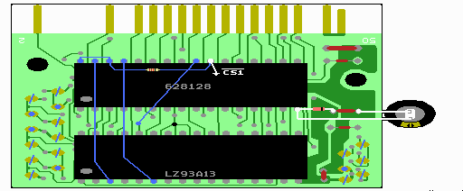

付録５ さらなる改造のおまけ
TA-2Mという基板での作り方（256kB版）の画像だけをとりあえず置いておきます。
この基板に載っているROMが32ピンなので、似非RAM化が簡単な基板の一つです。
1024kB版（1MB版)は要望があれば・・・。
１ 回路図＆基板


灰色の部分はROMをSRAMに差し替えるだけで作業が終わる部分です。
黒で書かれた部分が配線等の作業が必要になる部分です。
M60002がメガロムコントローラです。M60002ではない方のIC（ROM）を外します。
２ カット＆ショート


基本的に左右の半月上の部分をいじりますが、裏側にも二ヶ所カットするところがありますので注意してください。
３ SRAM周りの配線
2個の628512とLS139の足を次の図を参考にして加工します。
実体図と比べると分かり易いのですが、見方を説明すると、
Ｈ１ 足を横に広げて根本から１ミリの所からのカット
Ｈ３ 同様に広げて根本から３ミリでのカット
Ｓ２ 足が裏側に飛び出さない様に先を２ミリ程カットすること
（↑足の先をちょっとカットするだけです。裏側につけるSRAMの足とショートしないようにします。）
Ｒ 足を１８０度ひっくり返して足先をカットすること
（↑ひっくり返すときに足をもいでしまわない様に気を付けます。足先はICの上面と同じ高さにカットします。）
逆さにすると足をもいでしまうことがあるので、それが怖い人はしなくても大丈夫です。逆さにした方がちょっと見栄えが良いという程度です。
内側のへこんだケースを使う人は、なるべく基板に密着させるようにSRAMを取り付けるようにしましょう。何も書いていないピンはそのまま使います。
表の６２８１２８ 裏の６２８１２８ ＬＳ１３９
+--_--+ +--_--+ +--_--+
H1 |1 32| 30 H1 |1 32| 30 H3 |1 16| H3
H3 |2 31| H3 H3 |2 31| H3 H3 |2 15| H2
|3 30| R |3 30| R H3 |3 14| H2
|4 29| R |4 29| R H1 |4 13| H2
|5 28| R |5 28| R H3 |5 12| H2
|6 27| R |6 27| R H1 |6 11| H2
|7 26| R |7 26| R H3 |7 10| H2
|8 25| R |8 25| R H3 |8 9| H2
|9 24| R |9 24| R +-----+
|10 23| R |10 23| R
|11 22| S2 R |11 22| H3
|12 21| R |12 21| R
|13 20| R |13 20| R
|14 19| R |14 19| R
|15 18| R |15 18| R
|16 17| R |16 17| R
+-----+ +-----+


４ LS139周りの配線


必要であれば、ここでSWを追加しておくと良いでしょう。（基板の絵には描かれていません。）
５ ゴールドキャパシタの配線

 タイトルへ戻る
タイトルへ戻る